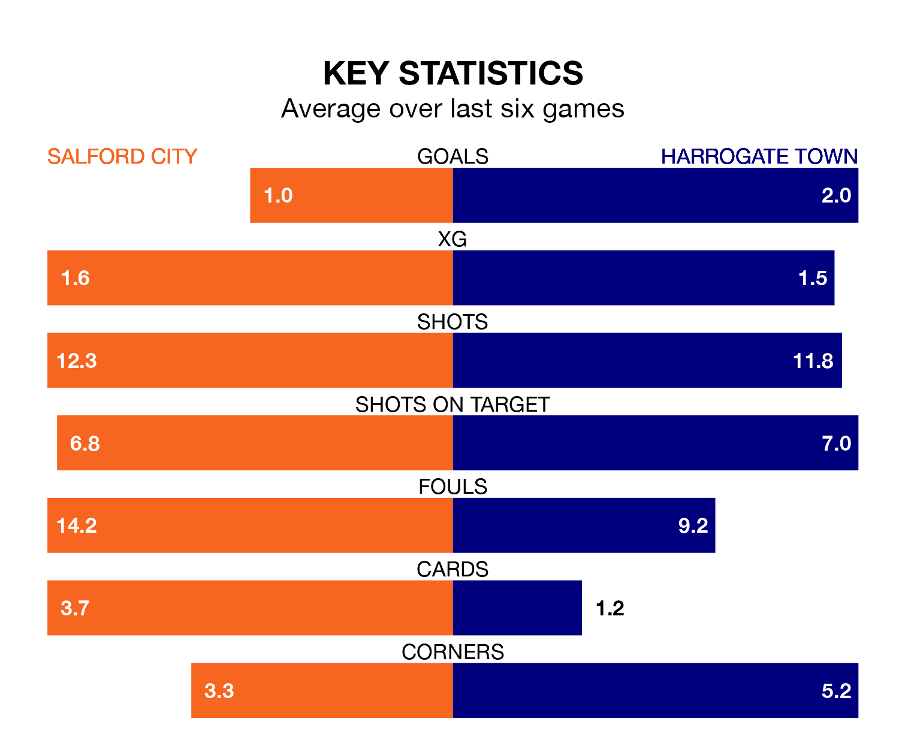

Harrogate Town travel to Salford City on Saturday in EFL League Two.
The visitors come into the game on the back of a defeat in their last match, having lost to Milton Keynes Dons 5-3 at home, with two goals from George Thomson and one from Abraham Odoh.
The Ammies, meanwhile, won their last match, 1-0 against Newport County, with their goal scored by Matt Smith.
In Matt Smith, Salford have one of the league's most on-form strikers so far this season. He has notched 24 goals in 45 appearances, to sit second in the scoring charts.
His goal rate of one every 144 minutes is quicker than that of Thomson, Harrogate's top scorer with a goal every 217 minutes, and a total of 16 goals in 42 games.
In the last 10 years, Salford and Harrogate have played each other on 13 occasions. Salford won eight of them, Harrogate one, and they drew four times.
On average, the Ammies scored 1.7 goals and Harrogate 1.0 in those matches.
Their last meeting was on September 23, when Harrogate won 3-2 at home.
City are 20th in the table after 45 games, of which they have won 13 and drawn 11, earning 50 points.
Town are seven places ahead of the Ammies in 13th, with 17 wins and 11 draws putting them on 62 points.
With 58 goals in 45 games so far this season, the away side are scoring at below the league average rate with 1.3 goals per game. And they are conceding at an average rate, letting in 67 goals at a rate of 1.5 per game.
The hosts are also below average scorers, with 1.4 goals per game, compared to a league average of 1.5. They have conceded 1.8 goals per game.
Salford are in disappointing form in EFL League Two, with two wins and four losses from their last six games.
With two wins and two draws over that period, Harrogate's form is slightly better – they have taken eight points from 18, compared to Salford's six.
Updated: 07:59 (UTC), 26/04/24